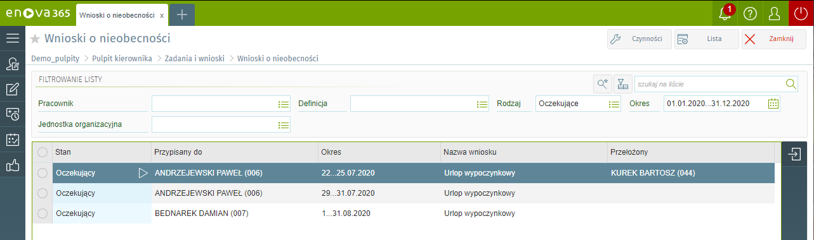
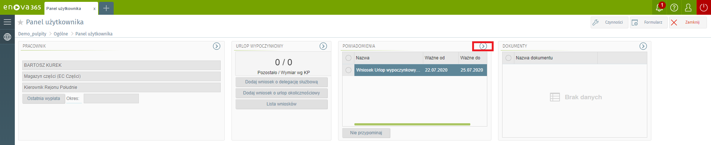
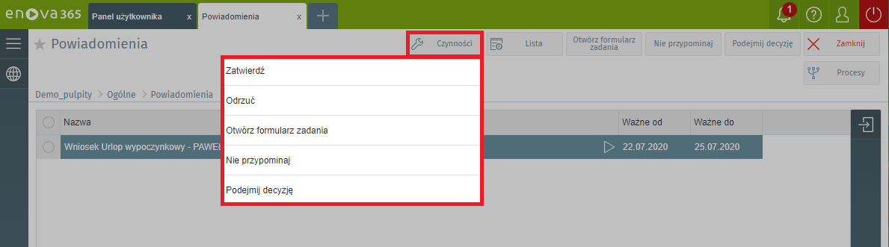
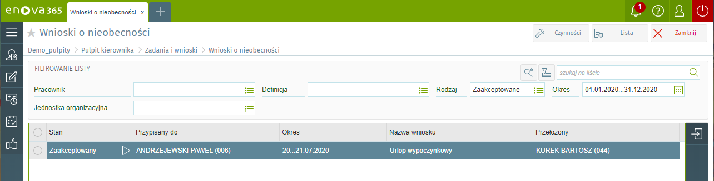

Zadania pracownika
Blok zawiera listę zadań do wykonania dla kierownika oraz wszystkich jego podwładnych. Na ten moment zdania są ściśle powiązane z wnioskami urlopowymi, delegacjami pracownika. Są to dwa rodzaje zadań do wykonania dla przełożonego - akceptacja wniosku oraz dla zastępcy - informacja o zastępstwie w związku z nieobecnością jednego z pracowników firmy.
Wnioski o nieobecności
Lista wnioski o nieobecności zawiera listę wprowadzonych wniosków o urlop wypoczynkowy, okolicznościowy, delegację.

Zatwierdzanie wniosków
Aby zatwierdzić wniosek o nieobecność pracownika klikamy w zakładkę 'Powiadomienia'.

Następnie zaznaczamy interesujący nas wniosek, klikamy przycisk 'Czynności' i wybieramy jaką chcemy podjąć decyzję np.: 'Zatwierdź'. Po zatwierdzeniu wniosku w zakładce Pulpit kierownika/Zadania i wnioski/Wnioski o nieobecność powinien być on widoczny ze stanem zmienionym na 'Zaakceptowany'.
 